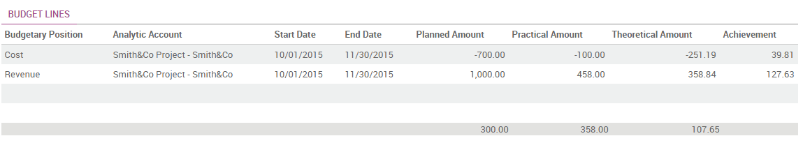

Overview
Managing budgets is an essential part of running a business. It allows you to measure your actual financial performance against the planned one. Odoo manages its budgets using both General and Analytic Accounts.
We will use the following example to illustrate. We just started a project with Smith&Co and we would like to budget the incomes and expenses of that project. We plan to have a revenue of 1000 and we don't want to spend more than 700.
Configuration
First we need to install the relevant apps to use budgeting. The main module is the accounting app. Go in the app module and install the Accounting and Finance app.

Further configuration is as well necessary. Go to and enable the Budget management feature
If we want to be precise and point specific invoices and vendors bills to our budget, you should enable the Analytic accounting as well. If we don't we will only be able to budget the total amount of general accounts.
Budgetary Positions
Budgetary positions are the general accounts for which you want to keep budgets (typically expense or income accounts). They need to be defined so Odoo can know it which accounts he needs to go get the budget information. Some might be already installed with your chart of accounts.
To define the positions enter the .
For our example we need to define what accounts relates to our project's expenses. Create a position and add items to select the accounts.

In this case we select the three relevant accounts used wherein we will book our expenses.

Click on Select.

Save the changes to confirm your Budgetary position.
Repeat this steps to create a revenue budgetary position. Only in this case select the relevant income accounts.
Analytical account
If you wish to point specific invoices or vendor bills to your budget you need to use analytical accounting. Odoo needs to know which costs or expenses are relevant to a specified budget. To do so we need to link our invoices and expenses to a defined analytical account. Create an analytical account by entering the Accounting module and clicking . Create a new Account called Smith&Co project and select the related partner.

Set a budget
Let's now set our targets for our budget. We specified that we expect to gain 1000 with this project and we would like not to spend more than 700.
To set those targets, enter the accounting app, select and create a new Budget.
We have to give a name to the budget. In this case we'll call it "Smith Project". Select the period wherein the budget will be applicable. Next add an item to specify your targets in the Budget Line.

Select the Budgetary Position related to the Budget Line. In other words, select the position that points to the accounts you want to budget. In this case we will start with our 700 maximum charge target. Select the "Cost" Budgetary Position and specify the Planned Amount. As we are recording a cost, we need to specify a negative amount. Finally, select the corresponding analytic account.

Click on Save & new to input the revenue budget. The Budgetary Position is Revenue and the Planned Amount is 1000. Save and close
You'll need to Confirm and Approve the budget.
Check your budget
You can check your budget at any time. To see the evolution, let's book some Invoices and Vendors Bills.
Tip
if you use analytical accounts remember that you need to specify the account in the invoice and / or purchase line.
See also
for more information about booking invoices and purchase orders see:
Go back in the budget list and find the Smith Project.
Via the analytical account, Odoo can account the invoice lines and purchase lines booked in the accounts and will display them in the Practical Amount column.
Note
The theoretical amount represents the amount of money you theoretically could have spend / should have received in function of the date. When your budget is 1200 for 12 months (january to december), and today is 31 of january, the theoretical amount will be 1000, since this is the actual amount that could have been realised.